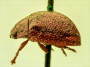
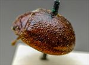
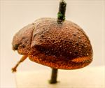

Click on images to enlarge
{kind=link}

Paropsis stigma type specimen, lateral view
{kind=link}

Paropsis stigma type specimen
{kind=link}

Paropsis stigma type specimen
{kind=link}
Paropsis stigma, description
Name
Trachymela stigma (Blackburn, 1896)
Type specimen
Location: BMNH
Label data: “Type” (red-bordered circle), “M[?] Vic. T”, “Blackburn coll. 1910-236.”, “Paropsis stigma Blackb.”
Female; Size: 6.2 x 4.85 x 2.85 mm; A-A: 1.0 mm, HCE/BL = 21.5% (approx, obtained from measurement on a photo of specimen lateral view).
Head brown; pronotum brown with vague black markings behind eyes; elytra brown with small common black area around summit, verrucae quite small and only clearly defined in apical third of elytra, punctures quite indistinct, hidden in between raised interstices that appear as both longitudinal and transverse wrinkles.
Original description
[Original description shown in figure, translated from Latin using ChatGPT, 04/2026]
Ovate; fairly strongly convex; the highest point (in lateral view) placed about the middle of the elytral margin (or a little before it); fairly shiny; ferruginous, with some spots on the pronotum, some spots on the elytra (especially a rather large common antemedian spot), and with some parts of the underside pitchy.
Head rather closely and finely punctate. Pronotum wider than long as about 2⅔ to 1, from the apex long broadened beyond the middle, behind the apex transversely impressed, fairly closely and not very strongly (coarsely rugulose at the sides) punctate; sides fairly strongly rounded, not at all flattened, posterior angles absent; scutellum almost smooth; elytra not depressed below the humeral callus, behind the base lightly transversely impressed, fairly closely and fairly strongly, scarcely in rows (much coarser at the sides) punctate; with verrucae fewer and less regularly arranged; interspaces fairly strongly (especially transversely) rugulose; marginal area fairly broad, less distinctly separated from the disc (more clearly so near the apex); basal ventral segment moderately strongly punctate. Length 2⅘ lines (~5.9 mm); width 2⅕ lines (~4.7 mm).
Female with the height (in lateral view) somewhat greater and placed slightly more posteriorly than in the male.Notes
Blackburn (1896) deals with T. stigma as part of his 'subgroup iii' (i.e., those species without "strongly marked characters", whose greatest height is not or scarcely in front of the middle of the elytral margin and whose elytra are not depressed under the humeral callus). Within that group, he characterises it as:
(1) elytra with a distinct postbasal impression on disc;
(2) the elytral margin (viewed from the side) straight or but little sinuous;
(3) elytral puncturation (and especially its seriation) much obscured by irregular transverse rugulosity;
(4) elytra with a conspicuous common dark blotch behind scutellum.
Ta11 and Ta34 are two species with almost identical morphologies and wide geographical distributions in eastern Australia, and both would fit Blackburn's description well. B.J. Selman (pers. comm., 1979) identified a specimen of Ta11 from Healesville (Victoria) as T. stigma. The stigma holotype is a female, 6.2 mm in length, slightly exceeding the known range of sizes for Ta11. Its A-A/BL ratio of 0.161 is on the small side of the expected value for a specimen of Ta11 of that size. The closely related Ta34 is also present in Victoria and females of this species are essentially indistinguishable from those of Ta11. Individuals of Ta34 tend to be slightly larger than those of Ta11 and their A-A/BL ratios are smaller than those of Ta11 for specimens of equivalent size. On balance, it is more likely that P. stigma is actually Ta34.
References
Blackburn, T. 1896, "Revision of the genus Paropsis. Part I", Proceedings of the Linnean Society of New South Wales, vol. 21, no. 4, 637-693 (page 680).
Copyright © 2026. All rights reserved.